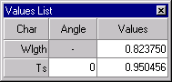

Digitize Plotted Data
Digitize Plotted Data
Navigation: OptiLayer Menu Commands > Analysis Menu >
Digitize Plotted Data
` <integral_values_and_characteri.html>`__ ` <idh_menu_analysis.html>`__ ` <idh_color_evaluation.html>`__
The Digitize command can be accessed from the popup menus of Evaluation windows by right-clicking. When any graphic plot is displayed in Evaluation, Refinement, Needle Optimization, Random Optimization, or other windows, using this command allows you to read the precise numerical (X,Y) values of the plotted characteristics. Once activated, a vertical bar will appear in the plot window to visually indicate the graph point being evaluated. Additionally, an additional window labeled “Values List” will appear on the screen, displaying the exact numerical values of all spectral characteristics presented in the window.

In the Values List window, the first line corresponds to the argument (in the picture above, this is wavelength) and the second line corresponds to the characteristic (in the picture above, this is transmittance for S-polarization). The last column of the Values List window displays data that corresponds to the current position of a vertical bar in the plot window; these values change as you move the bar along the X axis. The second column of the Values List window displays additional parameters of the plotted curve (in this case, it is the angle of incidence). In Angular mode, the angle will be shown as an argument, and wavelength will be an additional parameter appearing in the second column.

Note: The Digitize command in most cases recalculates all values for the given position of the vertical line, while the yellow hint windows simply display the Y value of the nearest data series. Therefore, these values may be slightly different. If you need higher precision of results, the Digitize command should be preferred.